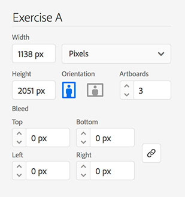

Exercises
Exercise A: Grid Exploration (5%)
Due week 2: January 17
Download the Exercise A starter screenshots taken from the Someone Shoe website.
Create a new document in Adobe Illustrator with the following settings:

- Document Name: Exercise A
- Width: 1138 pixels
- Height: 2051 pixels
- 3 artboards
In Illustrator, choose File > Place to place the three screenshots on individual artboards. Scale each image to 50% so it fits with width of the artboard. Use the artboard tool to adjust the height of each artboard so it matches the height of the screenshot.
Rename the current layer to "Images" and lock the layer.
Create a new layer and name it "Grids".
Select View > Rulers > Show Rulers (⌘ + R) and create vertical guidelines to indicate column widths and gutters by dragging from the vertical ruler. You can snap guides to pixels by holding down the "shift" key.
Use the Rectangle tool (M) and draw rectangles to mark all the columns. Make the rectangles red (RGB: 255, 0, 0 or HEX: #FF0000) with no stroke. Use the Transparency palette to reduce the opacity of the red fill colour to 50%.
Lock the "Grids" layer, create a new layer and name it "Grid Dimensions".
Using the Transform palette, carefully measure each of the column widths, the gutter widths and the total width of the site. Clearly type the measurements in pixels and percentages in the top left corner or each artboard, over the red column rectangles (font: Myriad Pro, 20pt, white).
Use the following formula to calculate percentages for each item:
item width ÷ total site width × 100(round percentages to 1 decimal point)
Hint: If you have done this correctly, all pixel dimensions should be whole numbers (no decimals) and the percentages of all your columns plus all your gutters should add up to 100% exactly.
Lock the "Grid Dimensions" layer, create a new layer and name it "Content".
Using the Rectangle tool (M) with a fill colour of 50% grey and no stroke, mark the elements on all the screenshots. Indicate images and videos by diagonal lines (use Pen tool, white stroke with 2pt stroke weight) crossing at the centre of each element.
Lock the "Content" layer, create a new layer and name it "Labels".
Using the Type tool (font: Myriad Pro, 12pt, black, all caps), label all the elements that you identified in step 11 (e.g.
image,navigation,heading, etc.).Your layers and their order in the Layers palette should look like the image shown here:

Create a single PDF document with 2 pages for each artboard (6 pages total). The 2 pages should have of these layers visible:
- Page 1: Images, Grid and Grid Dimensions
- Page 2: Images, Content and Labels
Make sure to optimize your PDF file size. The final PDF should be less than 5MB in size.
Save your document using the following naming convention: Lab#-LastnameFirstinitial-ExeA.pdf (e.g. Lab1-BuchananP-ExeA.pdf). Submit the final PDF document according to the class work submission process.
Exercise B: User Testing and Feedback (5%)
Due week 12: March 28 (at the end of class)
Each student will submit written feedback on a fellow student's project (from their class) – your instructor will pair you in groups of two.
The feedback can address – but is not limited to – the following:
- Site structure and organization of information (different categories and their content)
- Page structure and layout (hierarchy of information on the page)
- Typography, typesetting and editorial treatments (headline, subheads, body copy, etc.)
- Image and composition (quality, relevance, style, etc.)
- Navigation and wayfinding (placement of menu items, contact info, social media links, etc.)
- Overall look and feel of the website
Remember that your feedback should be clear, concise, constructive and actionable.
Deliverables
- A short written feedback (approximately 250 words).
- Include a link to the project that you have reviewed.
- Export your written feedback as a PDF and submit the final PDF document according to the class work submission process.
- Due by the end of class, week 12.